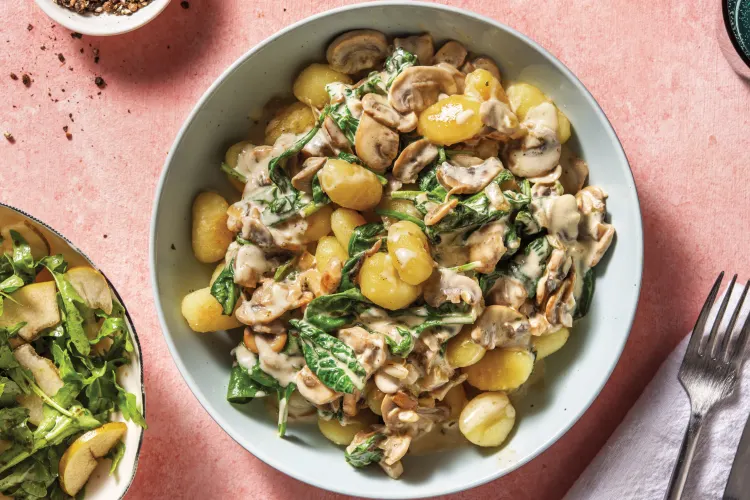

Creamy Mushroom & Parmesan Gnocchi
with Rocket & Pear Salad

This mellow combination of buttery mushrooms, fragrant
onion and baby spinach, tossed through golden pan-fried
gnocchi, makes a meal that's pure comfort. Served with a
tasty rocket and pear salad, it's got the lot!
Ingredients
- 1 brown onion
- 2 clove garlic
- 250g sliced mushroom
- 1 pack of gnocchi
- 1 packet of light cooking cream
- 1 packet of grated parmesan cheese
- 1 bag of baby spnich
- 1/2 pear
- 1 bag of rocket leaves
Steps
- Finely chop the brown onion. Finely chop the
garlic.
- Heat a drizzle of olive oil in a large frying pan over
a medium-high heat. Add the onion and cook, stirring,
until softened, 5 minutes. Add the sliced mushrooms
and butter and cook until browned and softened, 8-10
minutes. Add the garlic and cook until fragrant, 1-2
minutes.
- Heat a generous drizzle of olive oil in a separate
large frying pan over a medium-high heat. When the
oil is hot, add 1/2 the gnocchi in a single layer and
fry, tossing occasionally, until golden, 6-8 minutes.
Season with salt and pepper. Transfer to a plate.
Repeat with the remaining gnocchi. TIP: Add more olive
oil if the gnocchi is sticking to the pan. TIP: No
need to boil the gnocchi before frying!
- Return the pan containing the mushrooms to a low heat
and stir in the light cooking cream, salt, grated
Parmesan cheese (reserve some for garnish!) and baby
spinach leaves until wilted, 1-2 minutes. When the
mixture is heated through, add the gnocchi to the pan
and stir to combine.
- Thinly slice the pear (see ingredients). In a medium
bowl, combine the balsamic vinegar and a good drizzle
of olive oil. Add the rocket leaves and pear to the
dressing and toss to coat.
- Divide the creamy mushroom and Parmesan gnocchi
between bowls. Sprinkle over any reserved Parmesan.
Serve with the rocket and pear salad.